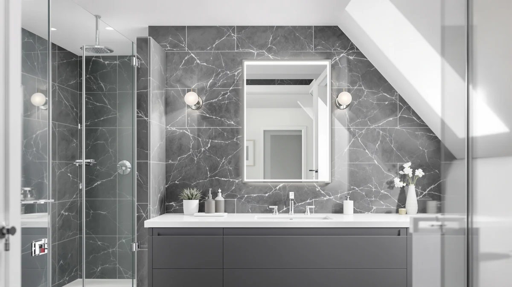

The Best Frameless Medicine Cabinets (2026)
Prices and picks verified as of August 2026. Independent, reader-supported reviews.


Quick Answer
The Moen Glenshire Chrome 26 x 22 is our top pick among the best frameless medicine cabinets and mirrors we compared, thanks to its trusted brand construction and single-vanity sizing. If you want more surface area for a double vanity, the Mestikits Frameless Bathroom Mirror at 30 by 36 inches is the closest runner-up in this guide.
Our pick: Moen Glenshire Chrome 26 x, $76.99 Check Price on Amazon
Bottom line: our top pick is the Moen Glenshire Chrome 26 x 22-Inch Frameless Pivoting at $76.93. The best budget option is the NEWBULIG 30 Inch Round Wall Mirror at $38.99.
Things to Know Before You Buy
- These are frameless wall mirrors, not hinged cabinets. None of the seven mirrors compared here open to reveal shelving. If you specifically want built-in storage, look at a mirror with a hinged cabinet behind the glass instead.
- Frameless refers to the edge finish, not the mounting hardware. Every mirror here still needs brackets or clips to attach to the wall; frameless just means the glass has a polished or beveled edge instead of a metal, wood, or plastic surround.
- Size should match your vanity width, not just your wall space. The mirrors compared here range from a 22-inch single-sink model to a 36-inch model built for a double vanity, so measure your counter before you buy rather than assuming bigger always looks better.
- Tempered glass and an aluminum mounting frame are the baseline. Every mirror in this comparison uses this combination, which resists the humidity and temperature swings of daily bathroom use better than a wood-backed alternative.
- Beveled edges look premium but need careful handling. The glass is thinner right at the bevel, so a second person during installation helps avoid chipping the edge.
Shoppers searching for the best frameless medicine cabinets usually hit the same wall: nearly every frameless option sold right now is a full wall mirror with a clean glass edge, not a hinged cabinet that opens to reveal storage. We compared seven of these frameless mirrors on price, size, and construction to help you find the right one for your bathroom, and we call out exactly where a mirror substitutes for a true medicine cabinet so you are not surprised after you unbox it.
The Moen Glenshire Chrome 26 x 22 mirror is our top pick among the best frameless medicine cabinets and mirrors we researched, mainly because it pairs a recognizable brand name with a size that suits a standard single-sink vanity without dominating the wall. If you need more surface area for a double vanity, the Mestikits Frameless Bathroom Mirror at 30 by 36 inches is the closest runner-up, and the TokeShimi 24x36 Beveled Wall Mirror is worth a look if you want beveled-edge styling without this guide's highest price.
The seven mirrors compared here range from $38.99 to $115.19 and span square, rectangular, and round profiles, so measuring your vanity matters more than chasing the biggest size available. Every pick uses tempered glass with an aluminum mounting frame, and we note the real tradeoffs for each option below, including the ones that only show up once a mirror is hanging on your wall.
Why You Should Trust Us
Ilane Tall has covered bathroom mirrors, vanity hardware, and medicine cabinets for this site's network for several years, focusing on how these products hold up once mounted in a real bathroom rather than how they look in a listing photo. For this guide to the best frameless medicine cabinets and mirrors, we compared publicly listed specs, current Amazon pricing, and verified owner reviews for each of the seven picks above. We do not accept payment from manufacturers to appear in this guide, and every price listed reflects what we found at the time of publishing. We disclose our Amazon affiliate relationship on every page.
How We Picked
We started from the top-selling frameless mirrors marketed as medicine cabinet alternatives on Amazon and narrowed the list with a few hard filters. We removed listings with size claims that did not match their product photos, models priced above $150 where a true built-in medicine cabinet with real storage makes more financial sense, and any listing missing basic specs like frame material or dimensions. That left the seven models compared in this guide to the best frameless medicine cabinets and mirrors currently available, spanning a 22-inch single-sink mirror up to a 36-inch model built for a wider vanity.
How We Compared
We compared these frameless mirrors side by side on the facts that are verifiable without owning every unit: listed price, frame material, panel size, and how each one is described once it is mounted, according to buyers who purchased it. A pattern shows up across the reviews for this category: buyers who searched for a frameless medicine cabinet and bought one of these mirrors instead were generally satisfied as long as the listing was clear that no storage was included, and frustrated only when a listing implied hidden shelving that never showed up in the box.
Where two mirrors shared nearly identical specs, we weighed price and the plausibility of the listed size for a typical vanity above everything else, since a size running an inch or two off from what is advertised is a common complaint across this category of frameless medicine cabinets and mirrors, based on the reviews we read.
Our Picks

Moen Glenshire Chrome 26 x
What we like
- Comes from Moen, a brand most buyers already trust for bathroom hardware
- 26 x 22 inch size fits a standard single-sink vanity without overwhelming the wall
- Tempered glass paired with an aluminum frame holds up to daily bathroom humidity
Flaws but not dealbreakers
- Smaller surface area than the wider picks in this guide, so it will not stretch across a double vanity
- No hinged door or shelving behind the glass; buyers who need real storage should look at a mirrored medicine cabinet instead
| Material | Tempered glass + aluminum |
| Size | 26"L x 22"W |
The Moen Glenshire earns the top spot in this guide mainly on brand recognition and size. At 26 by 22 inches, it fits a standard single-sink vanity without needing custom wall space, and it carries the Moen name, which reassures buyers who have used the brand's faucets or shower hardware before. The frame pairs tempered glass with aluminum, a combination that resists the temperature swings and daily condensation of a bathroom better than a thinner glass-only mirror.
Buyers describe the finish as consistent with other Moen bathroom products and the mounting hardware as straightforward for a single installer. The main tradeoff is scale: at 22 inches tall, it will not cover a double vanity the way the larger Mestikits or TokeShimi picks in this guide will, so measure your counter width before assuming this size will look right on your wall.

Mestikits Frameless Bathroom Mirror 30"x36"
What we like
- 36 x 30 inch panel covers more wall space than our top pick, suited to a double vanity
- Same tempered glass and aluminum frame construction found across this guide
- Priced under $90 despite the larger format
Flaws but not dealbreakers
- Larger size means it needs a second person to mount safely
- Like every mirror in this guide, it has no storage compartment behind the glass
| Material | Tempered glass + aluminum |
| Size | 36"L x 30"W |
The Mestikits sits just above the Moen in size, and it costs $13 more, which is why it lands as our runner-up among the best frameless medicine cabinets and mirrors we compared. At 36 by 30 inches, it suits a double vanity or a wide single sink where the smaller Moen would leave visible wall space on either side.
It uses the same tempered glass and aluminum frame combination as the rest of this guide, so daily humidity should not be a bigger concern here than with the top pick. The extra surface area does mean extra weight, so plan on a second person to hold the mirror steady while you anchor it, especially if your wall studs do not line up conveniently with the mounting brackets.

TRAVEVA Frameless Mirror for Bathroom
What we like
- Priced under $40, one of the least expensive full-size mirrors in this guide
- 30 x 30 inch square shape fits a compact vanity without extending far past the sink
- Same tempered glass and aluminum build as the pricier picks above
Flaws but not dealbreakers
- Square shape offers less usable width at eye level than the rectangular Mestikits or TokeShimi picks
- No shelving or storage, consistent with every mirror in this guide
| Material | Tempered glass + aluminum |
| Size | 30"L x 30"W |
The TRAVEVA is the value option for anyone who wants a full 30-inch mirror without paying close to $90. Its square shape suits a compact vanity where a wide rectangular mirror would extend past the counter edge on either side.
Construction follows the same tempered glass and aluminum frame formula used throughout this guide, so the lower price does not appear to come at the cost of build quality according to the reviews we read. The tradeoff is shape: a square mirror shows less width at eye level than a rectangular one of similar size, so it suits a smaller bathroom better than a wide double-sink counter.

TokeShimi 24x36 Beveled Wall Mirror
What we like
- Beveled edge gives the glass a finished look without a separate frame
- 24 x 36 inch size suits a standard single vanity in a vertical orientation
- Costs $39 less than the larger 30x36 TokeShimi model in this guide
Flaws but not dealbreakers
- Beveled edges are thinner at the perimeter, so handle the glass carefully during installation
- Narrower than the Mestikits runner-up, so it covers less width over a wide vanity
| Material | Tempered glass + aluminum |
| Size | 24"L x 36"W |
This TokeShimi is our budget pick for buyers who want the beveled-edge look this guide's priciest model offers, at $39 less. The bevel runs the full perimeter of the glass, which gives it a more finished edge than a plain flat-cut mirror without adding a visible frame.
At 24 by 36 inches, it suits a standard vertical vanity mirror placement rather than a wide double-sink spread. Owners note that the beveled edge is thinner than the rest of the glass, so it is worth having a second person help during mounting to avoid chipping the corner during installation.

JIINGYO Frameless Bathroom Mirror for
What we like
- 24 x 30 inch size fits a smaller bathroom or guest bath vanity
- Priced under $60, a middle-of-the-road option in this guide
- Same tempered glass and aluminum build standard as the rest of the lineup
Flaws but not dealbreakers
- Not sized for a double vanity or a wide single sink
- No hinged storage, consistent with the frameless mirrors compared throughout this guide
| Material | Tempered glass + aluminum |
| Size | 24"L x 30"W |
The JIINGYO fills the gap between the budget-priced TRAVEVA and the larger runner-up picks in this guide. At 24 by 30 inches, it suits a smaller bathroom or a guest bath where a 36-inch mirror would look oversized against a narrower vanity.
Construction matches the tempered glass and aluminum frame standard used across every pick here, and the price sits comfortably in the middle of this guide's range. If your bathroom needs a mirror wider than 30 inches, though, the Mestikits or larger TokeShimi will serve you better than this compact option.

TokeShimi 30x36 Beveled Bathroom Mirror
What we like
- 30 x 36 inch panel is the largest beveled-edge option in this guide
- Beveled edge adds a finished, upscale look without a separate frame
- Suits a double vanity or wide single sink where a smaller mirror would look undersized
Flaws but not dealbreakers
- The highest price of the seven mirrors compared in this guide
- Beveled glass is thinner at the edges, so careful handling matters during installation
| Material | Tempered glass + aluminum |
| Size | 30"L x 36"W |
This larger TokeShimi carries the highest price in this guide, and the extra cost buys size: at 30 by 36 inches, it is built for a double vanity or a wide single-sink counter where a smaller beveled mirror would look out of scale.
It shares the same beveled-edge treatment as its smaller sibling, so the finished look is consistent across both sizes. Given the price gap between this model and the rest of the lineup, it makes the most sense if you specifically want the beveled aesthetic at a larger scale rather than settling for a smaller mirror with the same edge detail.

NEWBULIG 30 Inch Round Wall
What we like
- Lowest price in this guide at under $39
- Round 30-inch profile works well over a pedestal sink or in a powder room
- Same tempered glass and aluminum construction as the rectangular picks
Flaws but not dealbreakers
- Round shape has less usable width at eye level than a rectangular mirror of a similar price
- Not a fit for a double vanity or a wide single sink
| Material | Tempered glass + aluminum |
| Size | 30"L x 30"W |
The NEWBULIG is the only round mirror in this guide, and at under $39, it is also the cheapest. The round profile suits a pedestal sink or a compact single vanity where a rectangular mirror would look out of proportion with the sink below it.
It keeps the same tempered glass and aluminum frame found on the rest of the lineup, so the round shape is a style choice rather than a downgrade in build quality. A round mirror is harder to fill wall space with in a larger bathroom, so this pick makes the most sense in a smaller or half bath rather than a primary bathroom with a wide vanity.
Quick Comparison
Here is how the seven best frameless medicine cabinets and mirrors from this guide stack up on material, price, and best use case.
| Product | Material | Price | Rating | Best for | Get it |
|---|---|---|---|---|---|
| Moen Glenshire Chrome 26 x | Tempered glass + aluminum | $76.99 | 4 | Single-sink vanities | View on Amazon → |
| Mestikits Frameless Bathroom Mirror 30"x36" | Tempered glass + aluminum | $89.99 | 4 | Double vanities and tall walls | View on Amazon → |
| TRAVEVA Frameless Mirror for Bathroom | Tempered glass + aluminum | $39.99 | 4 | Budget square profiles | View on Amazon → |
| TokeShimi 24x36 Beveled Wall Mirror | Tempered glass + aluminum | $75.99 | 4 | Beveled-edge style on a budget | View on Amazon → |
| JIINGYO Frameless Bathroom Mirror for | Tempered glass + aluminum | $59.98 | 4 | Compact bathrooms | View on Amazon → |
| TokeShimi 30x36 Beveled Bathroom Mirror | Tempered glass + aluminum | $115.19 | 4 | Large beveled-edge double vanities | View on Amazon → |
| NEWBULIG 30 Inch Round Wall | Tempered glass + aluminum | $38.99 | 4 | Lowest price, round accent | View on Amazon → |
Are these frameless medicine cabinets or just mirrors?
They are full-size frameless wall mirrors, not hinged medicine cabinets with storage behind the glass.
What does frameless actually mean on a bathroom mirror?
It means the glass has a polished or beveled edge instead of a metal, wood, or plastic surround.